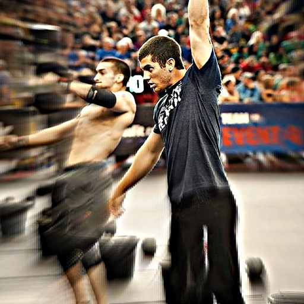

<section id="content" class="content-section">
	<div class="container" ng-controller="aboutController">
		<div id="ContentArea">
			<section id="coaches" class="row">
				<h1>COACHES</h1>

				<div class="container">
					<div class="row">
						<div class="col-md-6">
							<a href="/assets/img/profiles/Joshohseditfinal.jpg" data-gallery>
								
							</a>
							<h2>
								<a href="/#/about/coaches/josh" role="button"> Josh Burford,
									Owner </a>
							</h2>
							<p>Josh is a Maryland native who began his professional
								career in the fitness industry in 2006 working with elementary
								to collegiate level athletes. In 2007 he became an NSPA CPT and
								began developing individualized strength and conditioning
								programs and boot camps for clients of all fitness levels. In
								2011 a friend recommended giving CrossFit a chance. He began
								training at CrossFit Diesel and was truly introduced to the
								sport of fitness. After working out at this CrossFit facility
								for 6 months he began building a garage gym in his parents barn.
								It wasnt until he came across a video on CrossFit.com (Hope for
								Kenya) that he realized he could influence not only athletes but
								the surroundings community in a positive way. He completed his
								CrossFit CFL1 trainer course in April of 2013. He was welcomed
								by CrossFit Titan to shadow some amazing coaches to help hone
								his skills and take his coaching to the next level.</p>

							<p>
								<a class="btn-u btn-brd-hoverbtn-u-dark" href="/#/about/coaches/josh"
									role="button">View details »</a>
							</p>
						</div>
						<div class="col-md-6">
							<a href="/assets/img/profiles/BenDBSnatchedit.jpg" data-gallery>
								
							</a>
							<h2>
								<a href="/#/about/coaches/ben" role="button"> Ben Dziwulski,
									Owner </a>
							</h2>
							<p>Ben is a Maryland native who started doing CrossFit his
								Freshman year at North Carolina State University. After a couple
								years of trying to do CrossFit on his own, he found his home at
								Raleigh’s premier CrossFit gym, CrossFit Invoke, where he
								learned under CrossFit Headquarter Trainer, Christmas Abbott.
								After completing his CFL1 Trainer Course, he became a coach at
								Invoke. Since then, he has been coaching and competing for a
								couple years, trying to become a better coach each day. After
								graduating from college and moving back to Maryland, he was
								given the opportunity to coach at Titan CrossFit in Timonium,
								MD, where he learned even more about proper coaching,
								programming, and gym management from a fantastic group of
								people.</p>

							<p>Since starting BCCF, he has since moved on to live with
								his new bride, Shelby, who is in the Navy. Although he might not
								be in the gym physically, his influence is still felt throughout
								the culture and environment. Also, he loves to keep everyone in
								the loop with his weekly motivational BCCF email updates!</p>

							<p>
								<a class="btn-u btn-brd-hoverbtn-u-dark" href="/#/about/coaches/ben"
									role="button">View details »</a>
							</p>
						</div>

					</div>
					<div class="row">
						<div class="col-md-6">
							<a href="/assets/img/profiles/dallasmuscleupedit.jpg"
								data-gallery> 
							</a>
							<h2>
								<a href="/#/about/coaches/dallas" role="button"> Dallas
									Burford </a>
							</h2>
							<p>Dallas is a native to Maryland that started doing CrossFit
								in the the summer of 2013. After dabbling around with Crossfit
								for about a year he decided it was time to get serious with
								it.Not knowing much of anything, he took the time to learn
								everything that Josh and Ben could possibly teach him. After
								months of studying, learning all the ins and outs, he got his
								level one Certification at Fed Hill CrossFit. Since then Dallas
								has been one of the head coaches at Blue Crab CrossFit. Pursuing
								his passion, constantly coaching, training, and studying
								learning to make himself and to make the coaches around him
								better everyday.</p>
							<p>
								<a class="btn-u btn-brd-hoverbtn-u-dark" href="/#/about/coaches/dallas"
									role="button">View details »</a>
							</p>
						</div>
						<div class="col-md-6">
							<a href="/assets/img/profiles/Brettedit.jpg" data-gallery> 
							</a>
							<h2>
								<a href="/#/about/coaches/brett" role="button">Brett
									Costantino</a>
							</h2>
							<p>Brett started doing CrossFit unofficially in 2010 when he
								was preparing to go to Officer Candidate School for the Marine
								Corps. He found that the style of training and mentality of
								CrossFit helped him succeed and become a Marine Officer in 2011.
								Since then Brett has used CrossFit programming to train his
								Marine's for deployment and keep them focused on missions while
								in remote areas of Africa. Brett has been a part of the Blue
								Crab CrossFit family since January 2014 and has learned a great
								deal about the dynamics of coaching from Ben and Josh.</p>
							<p>
								<a class="btn-u btn-brd-hoverbtn-u-dark" href="/#/about/coaches/brett"
								   role="button">View details »</a>
							</p>
						</div>
					</div>
					<div class="row">
						<div class="col-md-6">
							<a href="/assets/img/profiles/aaronkbsedit.jpg" data-gallery>
								
							</a>
							<h2>
								<a href="/#/about/coaches/aaron" role="button">Aaron Lepsch</a>
							</h2>
							<p>Aaron was born/raised in Buffalo, NY but spent College and
								most of his adult life in Columbus, OH. He moved to Maryland in
								2012 to work at NASA as a Sr. Systems Administrator / Technical
								Director. His love for Health & Fitness is as strong as his
								passion for Technology. Aaron worked as a personal trainer while
								in College. When he moved to MD he was fed up with the "Globo
								Gym" atmosphere and needed a change. He met Ben & Josh a few
								weeks prior to Blue Crab CF opening their doors and the rest is
								history.</p>
							<p>
								<a class="btn-u btn-brd-hoverbtn-u-dark" href="/#/about/coaches/aaron"
									role="button">View details »</a>
							</p>
						</div>

						<div class="col-md-6">
							<a href="/assets/img/profiles/Christinaedit.jpg" data-gallery>
								
							</a>
							<h2>
								<a href="/#/about/coaches/christina" role="button">Christina
									Orcino</a>
							</h2>
							<p>Christina is a Maryland native who has known Coach Ben
								since freshman year science class in high school :). She played
								soccer her entire life and discovered CrossFit while she was
								attending East Carolina University (Go Pirates). Starting out as
								an Olympic weightlifter, she was a member of the ECU
								Weightlifting team before transitioning into CrossFit. Christina
								earned her Master's degree in Exercise Physiology from ECU after
								graduating with her Bachelor's in Exercise Science from
								Salisbury University. Throughout all of her stints with Olympic
								lifting, powerlifting, Strongman and CrossFit, she learned the
								value of mobility work and how it improves her performance and
								keeps her injury free.</p>
							<p>
								<a class="btn-u btn-brd-hoverbtn-u-dark" href="/#/about/coaches/christina"
								   role="button">View details »</a>
							</p>
						</div>
					</div>
					<div class="row">

					</div>
				</div>
			</section>
		</div>
	</div>
</section>